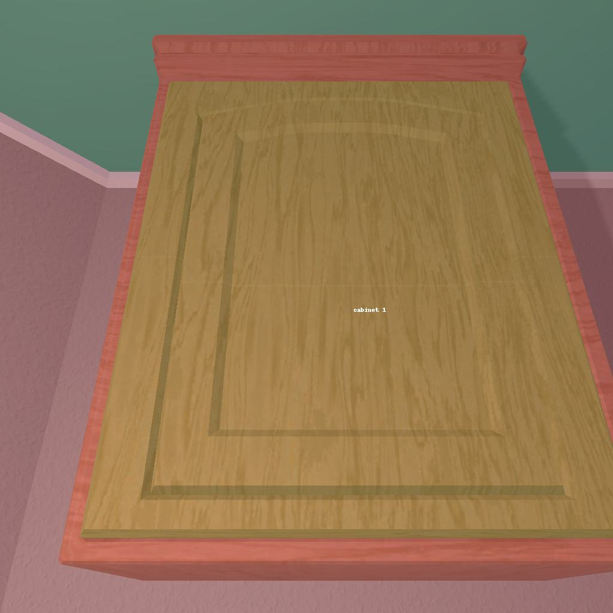

---------------------------------------------------------task: 19---------------------------------------------------------
--------------------------------------------------------------------------------------------------------------------------------------------------------------------
--------------------------------------------------------------------------------------------------------------------------------------------------------------------
Step:--------------------------------------------------------------------------4-------------------------------------------------------------------------------
----------------------------------------
VLM Prompt:
Image1:
**Instruction**
1. Analyze the provided image to identify all visible household objects, focusing on those relevant to the task description "put a cool tomato in microwave."
2. Use the analysis of the image and the task hint "The agent must find an object of the desired type, pick it up, go to a fridge, cool the object with the fridge, then find the correct location to place it, and put it down there. The agent does not need to use the fridge button or open the fridge to cool the object, and the agent just needs to do action that is "cool the object with the fridge"." to answer the question: what is the most reasonable action in the choices for the task description "put a cool tomato in microwave"?
4. Decide and write the answer using the template: The answer is: (i): , where i is the real number. If there is no desired object in the image, search every place based on **Initial Observation** to find the object. And if no one is exactly correct, choose a similar answer.
**Initial Observation**
You are in the middle of a room. Looking quickly around you, you can see cabinet (1-15), fridge (1), countertop (1-4), drawer (1-4), microwave (1), toaster (1), coffeemachine (1), garbagecan (1), sink (1), stoveburner (1-3), sinkbasin (1)
**Answer Choices**
(1): go to cabinet 2
(2): go to cabinet 3
(3): go to countertop 1
(4): go to cabinet 4
(5): go to cabinet 5
(6): go to cabinet 6
(7): go to cabinet 7
(8): go to drawer 1
(9): go to drawer 2
(10): go to cabinet 8
(11): go to drawer 3
(12): go to cabinet 9
(13): go to cabinet 10
(14): go to drawer 4
(15): go to cabinet 11
(16): go to toaster 1
(17): go to cabinet 12
(18): go to cabinet 13
(19): go to cabinet 14
(20): go to cabinet 15
(21): go to countertop 2
(22): go to coffeemachine 1
(23): go to garbagecan 1
(24): go to countertop 3
(25): go to countertop 4
(26): go to sink 1
(27): go to stoveburner 1
(28): go to stoveburner 2
(29): go to stoveburner 3
(30): go to sinkbasin 1
(31): open cabinet 1
(32): close cabinet 1
(33): examine cabinet 1
**Answer**
Let's think step by step by following the instructions.
----------------------------------------
----------------------------------------
Original Response:
Firstly, we need to find a tomato. Typically, tomatoes are not stored in cabinets; they are more likely to be found on countertops or in the fridge. However, the task description does not specify where the tomato is, so we need to search every place. Since the image shows cabinet 1 and there is no tomato visible, we can rule out option (33): examine cabinet 1.
Secondly, after finding the tomato, we need to cool it with the fridge. Since the task hint states that the agent does not need to use the fridge button or open the fridge, and just needs to do an action that is "cool the object with the fridge," we don't need to perform any actions related to opening or closing the fridge.
Lastly, we need to put the cooled tomato in the microwave. The image does not show the microwave, but based on the **Initial Observation**, we know there is a microwave (1) in the room.
Since the image provided does not show a tomato, fridge, or microwave, we must search every place based on **Initial Observation**. The most reasonable next action would be to go to the fridge (1) to cool the tomato, but since this option is not provided, we must choose an action that could potentially lead us to find the tomato.
Looking at the answer choices, going to a countertop is a reasonable action as tomatoes might be placed there. Among the countertop options, the first one (countertop 1) is the most logical choice as it is usually the place where items are commonly placed for quick access.
The answer is: (3): go to countertop 1.
----------------------------------------
----------------------------------------
>>> Refine Original VLM Response and Get Pure Action: go to countertop 1
----------------------------------------
-----------------------------------------------------------------
Running time: 14.820456981658936 seconds
Total Money: 6.638100000000003
-----------------------------------------------------------------
-----------------------------------------------------------------
Text Observation:You arrive at loc 4. On the countertop 1, you see a plate 1.
-----------------------------------------------------------------
UNSUCCEED